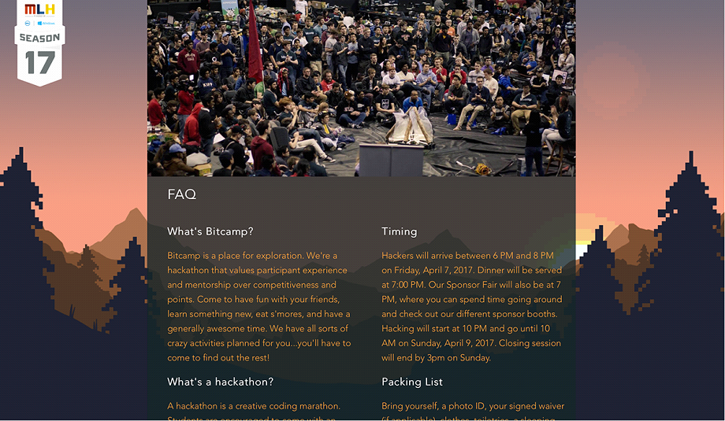
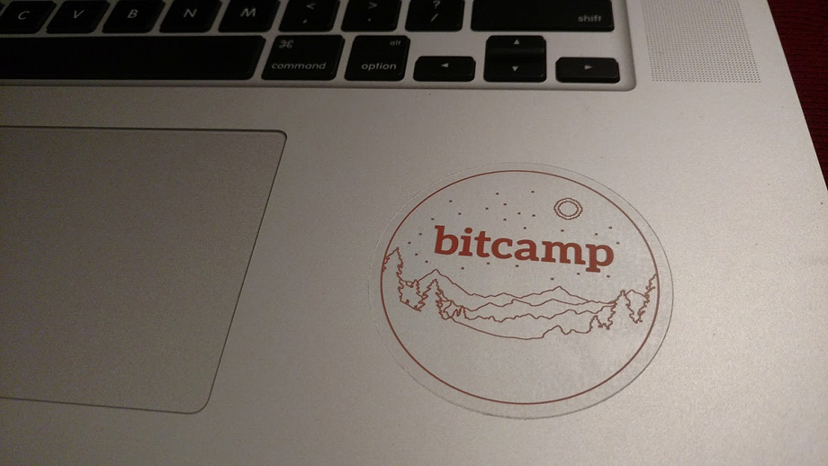

Our final site used a background with a picture of a landscape that cycled through day, night, and back to day as the user scrolled. The picture evokes the emotions of a camp, the time cycling demonstrates that the event is overnight, and the animation is a slightly flashy technical aspect that indicates that we’re tech-loving people without distracting from the content.
I came up with this concept, did the layout (except for some parts added by the development team) and animation, and art directed the actual background art. I then developed the background art into a motif used for all the rest of the promotional materials of the event. This was primarily a graphic design project of making a visual representation of the event that fit into the existing style guide, but also required some UX thinking to figure out a way to create an animation that wouldn’t distract from the content but would deliver our message in an experiential way.
